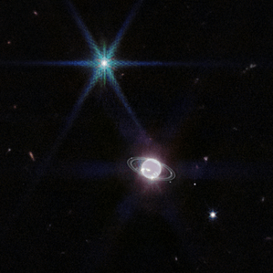
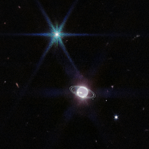

Gallery
This is your website; you aren't just a visitor here. Take full advantage of all this site has to offer. The James Webb Telescope tracking website “Where is Webb?" can be found at this link Click Here The tracking website has so many awesome articles of information. Many wonderful resources are made readily available at your fingertips. The more we explore and use these activities, the more our spark for space exploration has the ability to grow. Just simple activities, such as looking at photographs can teach us so much about our universe. We can gain the knowledge that other space explorers know through applying these simple activities to our daily learning habits about space. As you do this, you will notice how the activities on this page have helped you gain a knowledge or the James Webb Telescope. The knowledge you gain about the universe is priceless. Share your knowledge with a friend. Check out the video below showing the photos so far discovered, and also the video detailing the launch of the James Webb Telescope.
 
